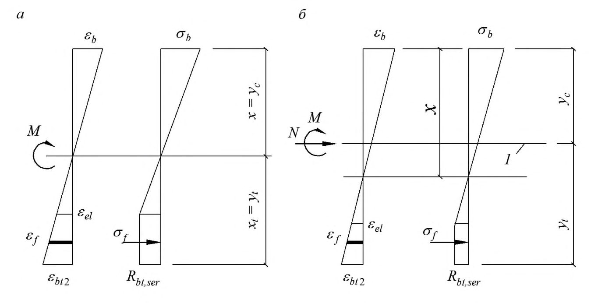
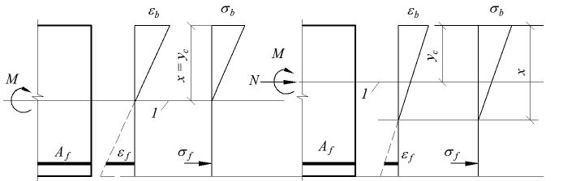
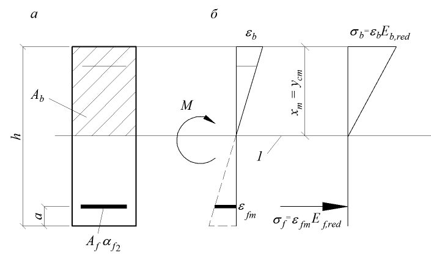
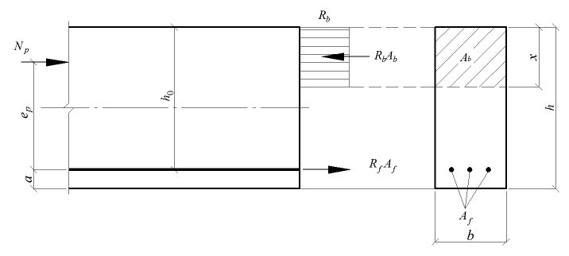
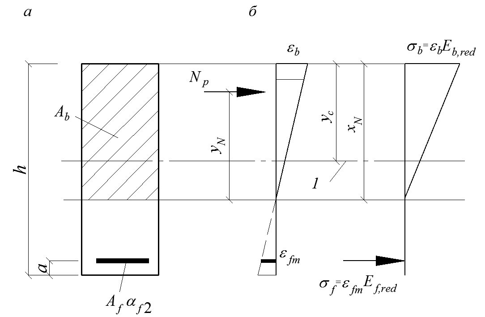

СП 295.1325800.2017 «Конструкции бетонные армированные полимерной композитной ар»
О документе: разработчики, утверждение, регистрация, ключевые слова
СВОД ПРАВИЛ
Москва 201 7
- 1 ИСПОЛНИТЕЛИ - АО «НИЦ «Строительство» - НИИЖБ им. А.А. Гвоздева, АНО «Стандарткомпозит», Объединение юридических лиц «Союз производителей композитов»
- 2 ВНЕСЕН Техническим комитетом по стандартизации ТК 465 «Строительство»
- 3 ПОДГОТОВЛЕН к утверждению Департаментом градостроительной деятельности и архитектуры Министерства строительства и жилищно-коммунального хозяйства Российской Федерации (Минстрой России)
- 4 УТВЕРЖДЕН приказом Министерства строительства и жилищно-коммунального хозяйства Российской Федерации от 11 июля 2017 г. № 988/пр и введен в действие с 12 января 2018 г.
- 5 ЗАРЕГИСТРИРОВАН Федеральным агентством по техническому регулированию и метрологии (Росстандарт)
6 ВВЕДЕН ВПЕРВЫЕ
В случае пересмотра (замены) или отмены настоящего свода правил соответствующее уведомление будет опубликовано в установленном порядке. Соответствующая информация, уведомление и тексты размещаются также в информационной системе общего пользования - на официальном сайте разработчика (Минстрой России) в сети Интернет
© Минстрой России, 2017
Настоящий нормативный документ не может быть полностью или частично воспроизведен, тиражирован и распространен в качестве официального издания на территории Российской Федерации без разрешения Минстроя России
Дата введения - 2018-01-12
Введение
Настоящий свод правил разработан с учетом обязательных требований, установленных в Федеральных законах от 27 декабря 2002 г. № 184ФЗ «О техническом регулировании», от 30 декабря 2009 г. № 384ФЗ «Технический регламент о безопасности зданий и сооружений» и содержит требования к проектированию конструкций из бетона, армированных композитной полимерной арматурой .
Свод правил разработан авторским коллективом АО «НИЦ «Строительство» - НИИЖБ им. А.А. Гвоздева (д-р техн. наук Т.А. Мухамедиев (руководитель работы) разделы 1-8 , канд. техн. наук Д.В. Кузеванов - разделы 6-8; д-р техн. наук В.Ф. Степанова, канд. хим. наук В.Р.Фаликман, канд. техн. наук А.В.Бучкин разделы 1-3, 5) при участии АНО «Стандарткомпозит» (инж. А.В. Гералтовский ), Объединения юридических лиц «Союз производителей композитов» (инж. С.Ю. Ветохин) и ОАО «Роснано» (инж. Ю.Г. Ткачук ).
1Область применения
Настоящий свод правил распространяется на проектирование конструкций из бетона, армированных композитной полимерной арматурой на основе углеродных, арамидных, базальтовых или стеклянных волокон.
Свод правил устанавливает требования к проектированию конструкций, изготовляемых из тяжелого и мелкозернистого бетонов, эксплуатируемых при статическом действии нагрузки в климатических условиях Российской Федерации.
2Нормативные ссылки
В настоящем своде правил использованы нормативные ссылки на следующие документы:
СП 20.13330.2016 «СНиП 2.01.07-85* Нагрузки и воздействия»
CП 63.13330.2012 «СНиП 52-01-2003 Бетонные и железобетонные конструкции. Основные положения» (с изменениями №1, №2)
СП 70.1330.2012 «СНиП 3.03.01-87 Несущие и ограждающие конструкции» (с изменением № 1)
ГОСТ 13015-2003 Изделия железобетонные и бетонные для строительства. Общие технические требования. Правила приемки, маркировки, транспортирования и хранения
ГОСТ 31938-2012 Арматура композитная полимерная для армирования бетонных конструкций. Общие технические условия
ГОСТ 32492-2015 Арматура композитная полимерная для армирования бетонных конструкций. Методы определения физико-механических характеристик
ГОСТ 27751-2014 Надежность строительных конструкций и оснований. Основные положения
\_\_\_\_\_\_\_\_\_\_\_\_\_\_\_\_\_\_\_\_\_\_\_\_\_\_\_\_\_\_\_\_\_\_\_\_\_\_\_\_\_\_\_\_\_\_\_\_\_\_\_\_\_\_\_\_\_\_\_\_\_\_\_\_\_\_\_\_\_\_\_\_\_\_\_\_\_\_\_\_\_\_\_\_\_\_\_\_\_\_\_\_\_\_\_\_\_
Concrete structures reinforced with fibre-reinforced polymer bars. Design rules
Примечание - При пользовании настоящим сводом правил целесообразно проверить действие ссылочных документов в информационной системе общего пользования - на официальном сайте федерального органа исполнительной власти в сфере стандартизации в сети Интернет или по ежегодному информационному указателю «Национальные стандарты», который опубликован по состоянию на 1 января текущего года, и по выпускам ежемесячного информационного указателя «Национальные стандарты» за текущий год. Если заменен ссылочный документ, на который дана недатированная ссылка, то рекомендуется использовать действующую версию этого документа с учетом всех внесенных в данную версию изменений. Если заменен ссылочный документ, на который дана датированная ссылка, то рекомендуется использовать версию этого документа с указанным выше годом утверждения (принятия). Если после утверждения настоящего свода правил в ссылочный документ, на который дана датированная ссылка, внесено изменение, затрагивающее положение, на которое дана ссылка, то это положение рекомендуется применять без учета данного изменения. Если ссылочный документ отменен без замены, то положение, в котором дана ссылка на него, рекомендуется применять в части, не затрагивающей эту ссылку. Сведения о действии сводов правил целесообразно проверить в Федеральном информационном фонде стандартов.
3Термины и определения
В настоящем своде правил применяются термины, установленные в СП 63.13330 и ГОСТ 31938.
4Общие положения
Композитную полимерную арматуру рекомендуется применять для армирования конструкций из бетона:
- при строительстве объектов дорожно-транспортной и городской инженерной инфраструктуры, сельскохозяйственного назначения, химических производств, токсичных захоронений, водоподготовки и водоочистки, мелиорации;
- при строительстве шахт, тоннелей, сооружений, эксплуатируемых в условиях высоких электромагнитных полей и разности потенциалов, морских и припортовых сооружений;
- при реконструкции, ремонте и усилении конструкций зданий и сооружений,
- а также для армирования фундаментов, многослойных теплосберегающих ограждающих конструкций, трубопроводов, опор линий электропередач, емкостных сооружений и других конструкций, эксплуатируемых в условиях воздействия агрессивных сред.
- расчет по прочности;
- расчет по устойчивости формы (для тонкостенных конструкций);
- расчет по устойчивости положения (опрокидывание, скольжение, всплывание).
- расчет по образованию трещин;
- расчет по раскрытию трещин;
- расчет по деформациям.
- 27751, в том числе стадии изготовления, транспортирования, возведения, эксплуатации, аварийные ситуации, а в необходимых случаях - пожар.
- 1,60 - при транспортировании,
- 1,40 - при подъеме и монтаже.
Допускается принимать более низкие, обоснованные в установленном порядке, значения коэффициентов динамичности, но не ниже 1,25.
- по нормальным сечениям (при действии изгибающих моментов и продольных сил);
- по наклонным сечениям (при действии поперечных сил);
- на местное действие нагрузки (местное сжатие, продавливание).
5Материалы
5.1Нормативные и расчетные характеристики бетона и стальной арматуры
5.2Нормативные и расчетные характеристики композитной полимерной арматуры
- стеклокомпозитную (АСК);
- базальтокомпозитную (АБК);
- углекомпозитную (АУК) ;
- арамидокомпозитную (ААК) ;
- комбинированную (АКК).
- сопротивления растяжению n f R , ;
- модуля упругости n f E , ;
- предельных относительных деформаций fu n , ;
- коэффициента линейной температурной деформации ft n , .
Нормативные значения прочностных и деформационных характеристик композитной полимерной арматуры различных видов должны быть не ниже значений, указанных в таблице 1.
Таблица 1
| Наименование показателя | Значение показателя композитной полимерной арматуры вида | Значение показателя композитной полимерной арматуры вида | Значение показателя композитной полимерной арматуры вида | Значение показателя композитной полимерной арматуры вида | Значение показателя композитной полимерной арматуры вида |
|---|---|---|---|---|---|
| АСК | АБК | арматуры АУК | ААК | АКК | |
| Предел прочности при растяжении, n f R , , МПа | 800 | 800 | 1400 | 1400 | 1000 |
| Модуль упругости при растяжении, n f E , , ГПа | 50 | 50 | 130 | 70 | 100 |
где f - коэффициент надежности по материалу, принимаемый при расчете по предельным состояниям второй группы равным 1,0, а при расчете по предельным состояниям первой группы - из условия обеспечения доверительной вероятности не менее 0,997, в зависимости от значения коэффициента вариации v , равным:
1,2 - при 0,1 v ;
1,5 - при 0,15 0,1 v ;
1 f - коэффициент, учитывающий условия эксплуатации конструкции с композитной полимерной арматурой, принимаемый по таблице 2;
Таблица 2
Условие эксплуатации rj rjycnh конструкции
Значение 1 f для композитной полимерной арматуры вида
| конструкции | АСК | АБК | АУК | ААК | АКК |
|---|---|---|---|---|---|
| Во внутренних помещениях | 0,8 | 0,9 | 1,0 | 0,9 | 0,9 |
| На открытом воздухе и в грунте | 0,7 | 0,8 | 1,0 | 0,8 | 0,8 |
где l f , - коэффициент снижения сопротивления растяжению композитной полимерной арматуры при длительном действии нагрузки, принимаемый по таблице 3.
Таблица 3
| Значение | l f , для композитной полимерной арматуры вида арматуры | l f , для композитной полимерной арматуры вида арматуры | l f , для композитной полимерной арматуры вида арматуры | l f , для композитной полимерной арматуры вида арматуры |
|---|---|---|---|---|
| АСК | АБК | АУК | ААК | АКК |
| 0,3 | 0,4 | 0,6 | 0,4 | 0,4 |
- при радиусе загиба хомутов из стержней диаметром dfw, равном не менее 6 dfw :
- при радиусе загиба хомутов менее 6 dfw - по данным производителя композитной полимерной арматуры, но не более значения, вычисленного по формуле (5.4).
Во всех случаях расчетное значение fw R сопротивления композитной полимерной арматуры растяжению при расчете прочности сечений, наклонных к продольной оси элемента, следует принимать не более 300 МПа.
6Конструкции без предварительного напряжения композитной полимерной арматуры
6.1Расчет конструкций по предельным состояниям первой группы
Расчет по прочности конструкций на действие изгибающих моментов и продольных сил
Общие положения
Расчет по прочности нормальных сечений конструкций следует производить на основе нелинейной деформационной модели согласно 6.1.15 - 6.1.20.
Расчет по прочности нормальных сечений конструкций прямоугольного, таврового и двутаврового сечений с композитной полимерной арматурой, расположенной у верхней и нижней граней сечения, а также сжатых конструкций прямоугольного, круглого и кольцевого поперечных сечений допускается производить по предельным усилиям.
Расчет по прочности нормальных сечений по предельным усилиям
- сопротивление бетона растяжению принимается равным нулю;
- сопротивление бетона сжатию представляется напряжениями, равными расчетному сопротивлению бетона сжатию и равномерно распределенными по условной сжатой зоне бетона;
- сопротивление композитной полимерной арматуры сжатию принимается равным нулю;
- растягивающие напряжения в композитной полимерной арматуре принимаются не более ее расчетного сопротивления растяжению.
где - характеристика сжатой зоны бетона, принимаемая для тяжелого бетона классов до В60 включительно равной 0,8, а для тяжелого бетона классов В70 - В100 и для мелкозернистого бетона - равной 0,7;
- f - расчетное значение предельных относительных деформаций композитной полимерной арматуры, вычисляемое по формуле (5.3);
b2 - относительные деформации сжатого бетона при напряжениях b R , принимаемые по СП 63.13330.
Расчет изгибаемых конструкций
где М - изгибающий момент от внешней нагрузки;
Мult - предельный изгибающий момент, который может быть воспринят сечением элемента.
где х - высота сжатой зоны бетона
- а) если граница проходит в полке (рисунок 2, а), т.е. соблюдается условие
значение Мult определяют по 6.1.8 как для прямоугольного сечения шириной ' f b ; б) если граница проходит в ребре (рисунок 2,б), т.е. условие (6.5) не соблюдается, значение Мult определяют по формуле
при этом высоту сжатой зоны бетона х определяют по формуле
Рисунок 1 Схема усилий и эпюра напряжений в сечении, нормальном к продольной оси изгибаемой конструкции, при ее расчете по прочности

Рисунок 2 Положение границы сжатой зоны в сечении изгибаемой конструкции

Значение ' f b , вводимое в расчет, принимают по СП 63.13330.
В случае, когда площадь растянутой арматуры принята большей, чем это требуется для соблюдения условия , 0 h x R предельный изгибающий момент Мult для изгибаемых конструкций прямоугольного сечения следует определять по формуле (6.3), подставляя в нее значение высоты сжатой зоны, вычисленное по формуле где
2 b - предельное значение относительной деформации бетона при сжатии, принимаемое согласно 6.1.20 СП 63.13330;
- см. формулу (6.1).
Расчет по прочности изгибаемых конструкций таврового или друтаврого сечений с полкой в сжатой зоне и высотой сжатой зоны 0 h x R следует производить по деформационной модели согласно указаниям 6.1.15 - 6.1.20.
Расчет внецентренно сжатых конструкций
где N - продольная сила от внешней нагрузки; е - расстояние от точки приложения продольной силы N до центра тяжести сечения растянутой арматуры
здесь 0 e - случайный эксцентриситет, принимаемый по СП 63.13330;
- коэффициент, учитывающий влияние продольного изгиба (прогиба) элемента на его несущую способность и определяемый согласно 6.1.12.
Высоту сжатой зоны х определяют:
б) при R h x = 0 по формуле
где
Eb - модуль упругости бетона;
I - момент инерции площади поперечного сечения конструкции относительно оси, проходящей через его центр тяжести;
l - коэффициент, учитывающий влияние длительности действия нагрузки
здесь M1 , Ml1 - моменты относительно центра наиболее растянутого или наименее сжатого (при целиком сжатом сечении) стержня соответственно от действия полной нагрузки и от действия постоянных и длительных нагрузок;
Рисунок 3 Схема усилий и эпюра напряжений в сечении, нормальном к продольной оси внецентренно сжатой конструкции, при расчете ее по прочности

где N - продольная сила от внешней нагрузки;
Ncr - условная критическая сила, определяемая по формуле
здесь D - жесткость конструкции в предельной по прочности стадии, определяемая согласно указаниям расчета по деформациям; l 0 - расчетная длина конструкции, определяемая по СП 63.13330.
Значение D допускается определять по формуле
е - относительное значение эксцентриситета продольной силы h e / 0 , принимаемое не менее 0,15 и не более 1,5.
Расчет центрально растянутых конструкций
где N - продольная растягивающая сила от внешних нагрузок;
Nult - предельное значение продольной силы, которое может быть воспринято конструкцией.
Значение силы Nult определяют по формуле
где Аf,tot - площадь сечения всей продольной композитной полимерной арматуры.
Расчет внецентренно растянутых конструкций
где N e и N e - усилия от внешних нагрузок;
Mult и M ult ' - предельные усилия, которые может воспринять сечение.
Усилия Mult и M ult ' определяют по формулам
б) если продольная сила N приложена за пределами расстояния между равнодействующими усилий в арматуре S и S' (рисунок 4, б) - из условия (6.17), определяя предельный момент Mult по формуле
при этом высоту сжатой зоны х определяют по формуле
Если значение x , полученное из расчета по формуле (6.22), больше значения 0 h R , то в формулу (6.21) подставляют h x R = , где R определяют согласно 6.1.6.
Рисунок 4 Схема усилий и эпюра напряжений в сечении, нормальном к продольной оси внецентренно растянутой конструкции, при расчете ее по прочности при приложении продольной силы N между равнодействующими усилий в арматуре (а) и за пределами расстоянии между равнодействующими усилий в арматуре (б)

Расчет по прочности нормальных сечений на основе нелинейной деформационной модели
- связь между осевыми напряжениями и относительными деформациями растянутой композитной полимерной арматуры принимают линейной;
- сопротивление композитной полимерной арматуры сжатию не учитывается.
- уравнений равновесия внешних сил и внутренних усилий в нормальном сечении конструкции:
уравнений, определяющие распределение деформаций по сечению конструкции
зависимостей, связывающие напряжения и относительные деформации бетона и композитной полимерной арматуры
где Abi , Zbxi , Zby i , bi - площадь, координаты центра тяжести i -го участка бетона и напряжение на уровне его центра тяжести;
Afj, Zfxj , Zfyj , fj - площадь, координаты центра тяжести j -го растянутого стержня композитной полимерной арматуры и напряжение в нем;
- 0 - относительная деформация волокна, расположенного на пересечении выбранных осей (в точке 0);
1 1 x r , y r - кривизна продольной оси в рассматриваемом поперечном сечении элемента в плоскостях действия изгибающих моментов Мх и Му ;
Еb - начальный модуль упругости бетона;
Еfj - модуль упругости jго растянутого стержня композитной полимерной арматуры;
bi - коэффициент упругости бетона i -го участка.
Значения коэффициентов bi определяют по СП 63.13330.
Рисунок 5 Расчетная схема нормального сечения конструкции

Расчет нормальных сечений конструкций по прочности производят из условий:
где b,max - относительная деформация наиболее сжатого волокна бетона в нормальном сечении конструкции от действия внешней нагрузки;
f,max - относительная деформация наиболее растянутого стержня композитной полимерной арматуры в нормальном сечении конструкции от действия внешней нагрузки;
b,ult - предельное значение относительной деформации бетона при сжатии, принимаемое согласно СП 63.13330;
f,ult -предельное значение относительной деформации удлинения композитной полимерной арматуры, принимаемое согласно 5.2.7.
в которых жесткостные характеристики Dij ( i,j = 1,2,3) определяют по формулам
Обозначения в формулах - см. 6.1.16.
Расчет по прочности конструкций при действии поперечных сил
Общие положения
Расчет конструкций по полосе между наклонными сечениями
Расчет конструкций по наклонным сечениям на действие поперечных сил
Расчет конструкций по наклонным сечениям на действие моментов
Расчет конструкций на местное сжатие
Расчет конструкций на продавливание
Расчет на продавливание следует производить по СП 63.13330, при этом в расчетные зависимости вместо характеристик стальной арматуры следует подставлять характеристики композитной полимерной арматуры.
6.2Расчет конструкций по предельным состояниям второй группы
Общие положения
- расчет по образованию трещин;
- расчет по раскрытию трещин;
- расчет по деформациям.
- 6.2.2. Расчет по образованию трещин производят, когда необходимо обеспечить отсутствие трещин, а также как вспомогательный при расчете по раскрытию трещин и по деформациям.
Расчет конструкций по образованию и раскрытию трещин
где М - изгибающий момент от внешней нагрузки относительно оси, нормальной к плоскости действия момента и проходящей через центр тяжести приведенного поперечного сечения элемента;
Мcrc - изгибающий момент, воспринимаемый нормальным сечением элемента при образовании трещин, определяемый по 6.2.8 - 6.2.11.
Для центрально растянутых элементов образование трещин определяют из условия
где N - продольное растягивающее усилие от внешней нагрузки;
Ncrc - продольное растягивающее усилие, воспринимаемое элементом при образовании трещин, определяемое согласно 6.2.12.
Непродолжительное раскрытие трещин определяют от совместного действия постоянных и временных (длительных и кратковременных) нагрузок, продолжительное только от постоянных и временных длительных нагрузок .
(6.43), где acrc - ширина раскрытия трещин от действия внешней нагрузки, определяемая согласно 6.2.7, 6.2.14 - 6.2.17 . acrc,ult - предельно допустимая ширина раскрытия трещин.
Значения acrc,ult принимают равными не более:
- 0,7 мм - при непродолжительном раскрытии трещин;
- 0,5 мм - при продолжительном раскрытии трещин.
Ширину продолжительного раскрытия трещин определяют по формуле
а ширину непродолжительного раскрытия трещин - по формуле
где 1 crc a - ширина раскрытия трещин от продолжительного действия постоянных и временных длительных нагрузок;
- 2 crc a - ширина раскрытия трещин от непродолжительного действия постоянных и временных (длительных и кратковременных) нагрузок;
- 3 crc a - ширина раскрытия трещин от непродолжительного действия постоянных и временных длительных нагрузок.
Значения 1 crc a , 2 crc a и 3 crc a следует определять по 6.2.14 - 6.2.17 .
Определение момента образования трещин, нормальных к продольной оси элемента
- сечения после деформирования остаются плоскими;
- эпюру напряжений в сжатой зоне бетона принимают треугольной формы, как для упругого тела (рисунок 6);
- эпюру напряжений в растянутой зоне бетона принимают трапециевидной формы с напряжениями, не превышающими расчетных значений сопротивления бетона растяжению Rbt ,ser ;
(6.42)
- относительную деформацию крайнего растянутого волокна бетона принимают равной ее предельному значению , bt ult при кратковременном действии нагрузки (см. 8.1.30 СП 63.13330.2012); при двухзначной эпюре деформаций в сечении элемента , 0,00015 bt ult = ;
- напряжения в растянутой композитной полимерной арматуре принимают в зависимости от относительных деформаций как для упругого тела;
- сопротивление композитной полимерной арматуры сжатию принимают равным нулю.
где Wpl - упругопластический момент сопротивления сечения для крайнего растянутого волокна бетона, определяемый с учетом положений 6.2.9;
- ех - расстояние от точки приложения продольной силы N (расположенной в центре тяжести приведенного сечения элемента) до ядровой точки, наиболее удаленной от растянутой зоны, трещинообразование которой проверяется.
- В формуле (6.46) знак «плюс» принимают при сжимающей продольной силе N , «минус» - при растягивающей силе.
1 Уровень центра тяжести приведенного поперечного сечения
Рисунок 6 -Схема напряженно-деформированного состояния сечения элемента при проверке образования трещин при действии изгибающего момента ( а ), изгибающего момента и продольной силы ( б )
Для прямоугольных сечений и тавровых сечений с полкой, расположенной в сжатой зоне, значение Wpl при действии момента в плоскости оси симметрии допускается принимать равным
где Wred - упругий момент сопротивления приведенного сечения по растянутой зоне сечения, определяемый в соответствии с 6.2.11 .
где Ired - момент инерции приведенного сечения элемента относительно его центра тяжести
f I I , - моменты инерции сечений бетона и растянутой композитной полимерной арматуры соответственно.
Ared - площадь приведенного поперечного сечения элемента, определяемая формуле
f - коэффициент приведения арматуры к бетону
f A A , - площади поперечного сечения бетона и растянутой композитной полимерной арматуры соответственно; yt - расстояние от наиболее растянутого волокна бетона до центра тяжести приведенного поперечного сечения элемента
здесь St,red - статический момент площади приведенного поперечного сечения элемента относительно наиболее растянутого волокна бетона.
Момент сопротивления Wred допускается определять без учета композитной полимерной арматуры.
Значение Mcrc определяют из решения системы уравнений, представленных в 6.1.17 и с учетом 6.1.18 - 6.1.20 , принимая относительную деформацию бетона bt,max у растянутой грани элемента от действия внешней нагрузки, равной предельному значению относительной деформации бетона при растяжении bt,ult , определяемому согласно СП 63.13330.
Расчет ширины раскрытия трещин, нормальных к продольной оси элемента
где f - напряжение в продольной растянутой арматуре в нормальном сечении с трещиной от соответствующей внешней нагрузки, определяемое согласно 6.2.15; l f - базовое расстояние между смежными нормальными трещинами, определяемое согласно 6.2.16;
f - коэффициент, учитывающий неравномерное распределение относительных деформаций растянутой арматуры между трещинами; допускается принимать коэффициент f = 1; если при этом условие (6.43) не удовлетворяется, то значение f следует определять по 6.2.17 ; φ 1 - коэффициент, учитывающий продолжительность действия нагрузки, принимаемый равным:
1,0 - при непродолжительном действии нагрузки;
1,4 - при продолжительном действии нагрузки; φ 2 - коэффициент, учитывающий профиль продольной композитной полимерной арматуры, принимаемый для арматуры периодического профиля равным 0,7; φ 3 - коэффициент, учитывающий характер нагружения, принимаемый равным:
1,0 - для элементов изгибаемых и внецентренно сжатых;
1,2 - для растянутых элементов.
Для композитной полимерной арматуры с показателями сцепления с бетоном не ниже, чем у стальной арматуры, значение коэффициента φ 2 допускается принимать в соответствии с СП 63.13330.
где , red c I y - момент инерции и высота сжатой зоны приведенного поперечного сечения элемента, определяемые с учетом площади сечения только сжатой зоны бетона и площади сечения растянутой арматуры согласно 6.2.26 .
Для изгибаемых элементов yc=x (рисунок 7), где х - высота сжатой зоны бетона, определяемая согласно 6.2.27 .
Значение коэффициента приведения арматуры к бетону 1 f определяют по формуле
где Eb , red - приведенный модуль деформации сжатого бетона, учитывающий неупругие деформации сжатого бетона и определяемый по формуле
Относительную деформацию бетона ε b 1, red принимают равной 0,0015.
Допускается напряжение s определять по формуле
где f z - расстояние от центра тяжести растянутой арматуры до точки приложения равнодействующей усилий в сжатой зоне элемента.
- уровень центра тяжести приведенного поперечного сечения
Рисунок 7 -Схема напряженно-деформированного состояния элемента с трещинами при действии изгибающего момента ( а ), изгибающего момента и продольной силы ( б )
Для элементов прямоугольного поперечного сечения значение f z определяют по формуле
Для элементов прямоугольного, таврового (с полкой в сжатой зоне) и двутаврового поперечного сечения допускается значение f z принимать равным 0 0,8 h .
При действии изгибающего момента M и продольной силы N напряжение f в растянутой арматуре определяют по формуле
где , red c A y - площадь приведенного поперечного сечения элемента и расстояние от наиболее сжатого волокна бетона до центра тяжести приведенного сечения, определяемые по общим правилам расчета геометрических характеристик сечений упругих элементов с учетом площади сечения только сжатой зоны бетона и площади сечения растянутой арматуры согласно 6.2.27, принимая коэффициент приведения арматуры к бетону 1 f .
Допускается напряжение f определять по формуле
где f e - расстояние от центра тяжести растянутой арматуры до точки приложения продольной силы N с учетом эксцентриситета, равного M N .
Для элементов прямоугольного сечения значение f z допускается определять по формуле (6.59), в которой x - высота сжатой зоны бетона с учетом влияния продольной силы, определяемая согласно 6.2.27 .
Для элементов прямоугольного, таврового (с полкой в сжатой зоне) и двутаврового поперечных сечений допускается значение f z принимать равным 0 0,7 h .
В формулах (6.60) и (6.61) знак «плюс» принимают при растягивающей, а знак «минус» - при сжимающей продольной силе.
Напряжения f не должны превышать ser f R , .
и принимают не менее 10 f d и 10 см и не более 20 f d и 20 см. здесь Аbt - площадь сечения растянутого бетона; f A - площадь сечения растянутой арматуры; f d - номинальный диаметр арматуры.
Значения Abt определяют по высоте растянутой зоны бетона xt , используя правила расчета момента образования трещин согласно 6.2.8 - 6.2.13 .
В любом случае значение Abt принимают равным площади сечения при ее высоте в пределах не менее 2 a и не более 0,5 h .
где crc f , - напряжение в продольной растянутой арматуре в сечении с трещиной сразу после образования нормальных трещин, определяемое по 6.2.15, принимая в соответствующих формулах значения M = Mcrc ; f - то же при действии рассматриваемой нагрузки.
Для изгибаемых элементов значение коэффициента f допускается определять по формуле
где Mcrc определяют по 6.2.10 .
Расчет конструкций по деформациям
Расчет по деформациям следует производить на действие:
- постоянных, временных длительных и кратковременных нагрузок - при ограничении деформаций технологическими или конструктивными требованиями;
- постоянных и временных длительных нагрузок - при ограничении деформаций эстетическими требованиями.
Расчет элементов конструкций по прогибам
где f - прогиб элемента от действия внешней нагрузки; f ult - значение предельно допустимого прогиба элемента.
Прогибы конструкций определяют по общим правилам строительной механики в зависимости от изгибных, сдвиговых и осевых деформационных характеристик элемента в сечениях по его длине (кривизн, углов сдвига и т.д.).
В тех случаях, когда прогибы элементов в основном зависят от изгибных деформаций, значения прогибов определяют по жесткостным характеристикам согласно 6.2.21 и 6.2.30 .
Определение кривизны элементов конструкций
Элементы или участки элементов рассматривают без трещин, если трещины не образуются (т.е. условие (6.41) не выполняется) при действии полной нагрузки, включающей постоянную, временную длительную и кратковременную нагрузки.
Кривизну элементов с трещинами и без трещин можно также определять на основе деформационной модели согласно 6.2.31 .
- для участков без трещин в растянутой зоне
- для участков с трещинами в растянутой зоне
В формуле (6.66):
1 1 , r 2 1 r
- кривизны от непродолжительного действия кратковременных нагрузок и от продолжительного действия постоянных и временных длительных нагрузок соответственно. В формуле (6.67):
1 1 r - кривизна от непродолжительного действия всей нагрузки, на которую производят расчет по деформациям;
2 1 r - кривизна от непродолжительного действия постоянных и временных длительных нагрузок;
3 1 r - кривизна от продолжительного действия постоянных и временных длительных нагрузок.
Кривизны 1 1 r , 2 1 r и 3 1 r определяют согласно 6.2.24 .
где М - изгибающий момент от внешней нагрузки (с учетом момента от продольной силы N ) относительно оси, нормальной плоскости действия изгибающего момента и проходящей через центр тяжести приведенного поперечного сечения элемента;
D - изгибная жесткость приведенного поперечного сечения элемента, определяемая по формуле
где Eb 1 - модуль деформации сжатого бетона, определяемый в зависимости от продолжительности действия нагрузки и с учетом наличия или отсутствия трещин;
I red - момент инерции приведенного поперечного сечения относительно его центра тяжести, определяемый с учетом наличия или отсутствия трещин.
Значения модуля деформации бетона Eb 1 и момента инерции приведенного сечения Ired для элементов без трещин в растянутой зоне и с трещинами определяют по 6.2.25 и 6.2.26 соответственно.
Жесткость элемента на участке без трещин в растянутой зоне
Момент инерции Ired приведенного поперечного сечения элемента относительно его центра тяжести определяют как для сплошного тела по общим правилам сопротивления упругих элементов с учетом всей площади сечения бетона и площадей сечения растянутой арматуры с коэффициентом приведения арматуры к бетону
где I - момент инерции бетонного сечения относительно центра тяжести приведенного поперечного сечения элемента;
I f - момент инерции площади сечения растянутой арматуры относительно центра тяжести приведенного поперечного сечения элемента; f - коэффициент приведения арматуры к бетону,
Значение I определяют по общим правилам расчета геометрических характеристик сечений упругих элементов.
Допускается определять момент инерции Ired без учета арматуры.
Значения модуля деформации бетона в формулах (6.69) и (6.71) принимают равными:
- при непродолжительном действии нагрузки
- при продолжительном действии нагрузки
где φ b , cr - принимают по таблице 6.12 СП 63.133300.2012.
Жесткость элемента на участке с трещинами в растянутой зоне.
- сечения после деформирования остаются плоскими;
- напряжения в бетоне сжатой зоны определяют как для упругого тела;
- работу растянутого бетона в сечении с нормальной трещиной не учитывают;
- работу растянутого бетона на участке между смежными нормальными трещинами учитывают посредством коэффициента f .
Жесткость элемента D на участках с трещинами определяют по формуле (6.69) и принимают не более жесткости без трещин.
Значения модуля деформации сжатого бетона Eb1 принимают равными значениям приведенного модуля деформации Eb,red , определяемого по формуле
где red b 1, - относительные деформации бетона, принимаемые равными:
- 0,0015 - для тяжелого бетона при непродолжительном действии нагрузки ;
- по СП 63.13330- для тяжелого бетона при продолжительном действии нагрузки.
Момент инерции приведенного поперечного сечения элемента Ired относительно его центра тяжести определяют по общим правилам сопротивления упругих элементов с учетом площади сечения бетона только сжатой зоны и площади сечения растянутой арматуры с коэффициентом приведения арматуры к бетону 1 f
где b I , f I - моменты инерции площадей сечения сжатой зоны бетона и растянутой арматуры соответственно относительно центра тяжести приведенного без учета бетона растянутой зоны поперечного сечения.
Значение f I определяют по общим правилам сопротивления материалов, принимая расстояние от наиболее сжатого волокна бетона до центра тяжести приведенного (с коэффициентом приведения 1 f ) поперечного сечения без учета бетона растянутой зоны (рисунок 8); для изгибаемых элементов
где xm - средняя высота сжатой зоны бетона, учитывающая влияние работы растянутого бетона между трещинами и определяемая согласно 6.2.27 (рисунок 8).
Значения b I и y cm определяют по общим правилам расчета геометрических характеристик сечений упругих элементов.
Значения коэффициента приведения растянутой арматуры к бетону 1 f определяют по 6.2.29 .
где 0 b S и 0 f S - статические моменты сжатой зоны бетона и растянутой арматуры соответственно относительно нейтральной оси.
Для прямоугольных сечений высоту сжатой зоны определяют по формуле
Для тавровых (с полкой в сжатой зоне) и двутавровых сечений высоту сжатой зоны определяют по формуле
где 0 f f A bh = . f A - площадь сечения свесов сжатой полки.
1 - уровень центра тяжести приведенного без учета растянутой зоны бетона поперечного сечения
Рисунок 8 -Приведенное поперечное сечение ( а ) и схема напряженно-деформированного состояния элемента с трещинами ( б ) для расчета его по деформациям при действии изгибающего момента.
Для внецентренно сжатых и внецентренно растянутых элементов положение нейтральной оси (высоту сжатой зоны) определяют из уравнения
где y N - расстояние от нейтральной оси до точки приложения продольной силы N , отстоящей от центра тяжести полного сечения (без учета трещин) на расстоянии 0 M e N = ;
0 0 0 0 , , , f b f b S S I I - моменты инерции и статические моменты соответственно сжатой зоны бетона и растянутой арматуры относительно нейтральной оси.
Допускается для элементов прямоугольного сечения высоту сжатой зоны при действии изгибающих моментов M и продольной силы N определять по формуле
где x M - высота сжатой зоны изгибаемого элемента, определяемая по формулам (6.77)(6.78);
, red red I A - момент инерции и площадь приведенного поперечного сечения, определяемые для полного сечения (без учета трещин).
Значения геометрических характеристик сечения элемента определяют по общим правилам расчета сечения упругих элементов.
В формуле (6.80) знак «плюс» принимают при сжимающей, а знак «минус» при растягивающей продольной силе.
где z - расстояние от центра тяжести растянутой арматуры до точки приложения равнодействующей усилий в сжатой зоне.
Для элементов прямоугольного сечения значение z определяют по формуле
Для элементов прямоугольного, таврового (с полкой в сжатой зоне) и двутаврового поперечных сечений значение z допускается принимать равным 0 0,8 h .
где Eb , red - приведенный модуль деформации сжатого бетона, определяемый при непродолжительном и продолжительном действии нагрузки по 6.2.26 ;
E f , red - приведенный модуль деформации растянутой арматуры, определяемый с учетом влияния работы растянутого бетона между трещинами по формуле
Значения коэффициента f определяют по 6.2.17 .
Допускается принимать 1 = f при этом, если условие (6.65) не удовлетворяется, расчет производят с учетом коэффициента f , определяемого по 6.2.17 .
При совместном действии кратковременной и длительной нагрузок полный прогиб элементов без трещин и с трещинами в растянутой зоне определяют путем суммирования прогибов от соответствующих нагрузок по аналогии с суммированием кривизны по 6.2.23, принимая жесткостные характеристики D в зависимости от принятой продолжительности действия рассматриваемой нагрузки.
Допускается при определении жесткостных характеристик D элементов с трещинами в растянутой зоне принимать коэффициент f =1. В этом случае при совместном действии кратковременной и длительной нагрузок полный прогиб изгибаемых элементов с трещинами определяют суммированием прогибов от непродолжительного действия кратковременной нагрузки и от продолжительного действия длительной нагрузки с учетом соответствующих значений жесткостных характеристик D - подобно тому, как это принято для элементов без трещин.
Определение кривизны элементов на основе нелинейной деформационной модели
Значения кривизн, входящих в формулы (6.66) и (6.67), определяют из решения системы уравнений (6.32) - (6.34). При этом, для элементов с нормальными трещинами в растянутой зоне напряжение в арматуре, пересекающей трещины, определяют по формуле
где здесь fj crc , - относительная деформация растянутой арматуры в сечении с трещиной сразу после образования нормальных трещин; fj - относительная деформация растянутой арматуры, пересекающей трещины, в рассматриваемой стадии расчета.
При определении кривизн от непродолжительного действия нагрузки в расчете применяют диаграммы кратковременного деформирования бетона при осевых сжатии и растяжении, а при определении кривизн от продолжительного действия нагрузки - диаграммы длительного деформирования бетона с расчетными характеристиками для предельных состояний второй группы.
Для частных случаев действия внешней нагрузки (изгиб в двух плоскостях, изгиб в плоскости оси симметрии поперечного сечения элемента и т.п.) кривизны, входящие в формулы (6.66) и (6.67), определяют из решения систем уравнений (6.32) - (6.34) с учетом указаний 6.1.8 - 6.21.
7Конструкции с предварительно напряженной композитной полимерной арматурой
Требования настоящего раздела распространяются на проектирование конструкций с предварительно напряженной композитной полимерной арматурой на основе углеродных, арамидных и стеклянных волокон.
7.1Предварительные напряжения арматуры
0,5 fn R - для арамидокомпозитной арматуры;
0,65 fn R - для углекомпозитной арматуры;
0,45 fn R - для стеклокомпозитной арматуры.
При натяжении арматуры на упоры следует учитывать: первые потери -от релаксации предварительных напряжений в арматуре, от температурного перепада при термической обработке конструкций, от деформации анкеров и деформации формы (упоров); вторые потери - от усадки и ползучести бетона.
При натяжении арматуры на бетон следует учитывать: первые потери - от деформации анкеров, от трения арматуры о стенки каналов; вторые потери - от релаксации предварительных напряжений в арматуре, усадки и ползучести бетона.
для углекомпозитной арматуры:
В формулах (7.1) - (7.2) значение fp следует принимать без учета потерь.
При наличии более точных данных о релаксации арматуры допускается принимать иные значения потерь от релаксации.
Максимальное значение температуры при пропаривании конструкции не должно превышать значения температуры стеклования полимерной композитной арматуры.
где fpj A и j fp (1) - площадь сечения j -й группы стержней напрягаемой арматуры в сечении элемента и предварительное напряжение в группе стержней, с учетом первых потерь, определяемое по формуле
здесь fpj - начальное предварительное напряжение рассматриваемой группы стержней арматуры;
(1) fp - полные значения первых потерь предварительного напряжения арматуры
i - номер первых потерь предварительного напряжения.
Усилие в напрягаемой арматуре с учетом полных потерь принимают равным
j fp (2) - полные значения потерь предварительного напряжения арматуры
здесь i - номер всех потерь предварительного напряжения.
- 0,6 bp R - при передаче усилия предварительного обжатия (1) P , определяемого с учетом первых потерь;
- 0,45 bp R - в эксплуатационной стадии при действии усилия предварительного обжатия (1) P , определяемого с учетом полных потерь, и нормативной длительной нагрузки;
- 0,6 bp R - в эксплуатационной стадии при действии усилия предварительного обжатия (2) P , определяемого с учетом полных потерь, и полной нормативной нагрузки. Напряжения в бетоне bp определяют по формуле
где ) ( i P ( i = 1, 2) - усилие предварительного обжатия с учетом первых или полных потерь;
M - изгибающий момент от соответствующей внешней нагрузки, действующий в стадии обжатия (при передаче усилия предварительного обжатия (1) P - от нагрузки от собственного веса конструкции); y - расстояние от центра тяжести сечения до рассматриваемого волокна. op e - эксцентриситет усилия (1) P или (2) P относительно центра тяжести приведенного поперечного сечения элемента.
7.2Расчет элементов предварительно напряженных конструкций по предельным состояниям первой группы
Расчет предварительно напряженных конструкций по прочности
Общие положения
Расчет по прочности нормальных сечений в общем случае производят на основе нелинейной деформационной модели согласно 7.2.12 - 7.2.14 .
Допускается расчет железобетонных элементов прямоугольного, таврового и двутаврового сечений с арматурой, расположенной у перпендикулярных к плоскости изгиба граней элемента, при действии усилий в плоскости симметрии нормальных сечений производить на основе предельных усилий согласно 7.2.7 - 7.2.11 .
Значения коэффициента fp принимают равными:
- 0,9 - при благоприятном влиянии предварительного напряжения;
- 1,1 - при неблагоприятном влиянии предварительного напряжения.
Расчет предварительно напряженных конструкций на действие изгибающих моментов в стадии эксплуатации по предельным усилиям
где fp - предварительное напряжение в арматуре с учетом всех потерь, принимаемое при значении коэффициента fp =0,9.
Расчет предварительно напряженных конструкций в стадии предварительного обжатия
где fp A - площадь сечения напрягаемой арматуры; fp - предварительные напряжения с учетом первых потерь и коэффициента fp =1,1.
где p e - расстояние от точки приложения продольной силы p N с учетом влияния изгибающего момента M от внешней нагрузки, действующей в стадии изготовления (собственная масса элемента), до центра тяжести сечения ненапрягаемой арматуры растянутой или наименее сжатой (при полностью сжатом сечении элемента) от этих усилий (рисунок 9), определяемое формуле
e 0 p - расстояние от точки приложения силы p N до центра тяжести сечения элемента; b R - расчетное сопротивление бетона сжатию, принимаемое по линейной интерполяции как для класса бетона по прочности на сжатие, численно равное передаточной прочности бетона bp R .
Высоту сжатой зоны бетона определяют в зависимости от значения R , вычисляемого по формуле (6.1):
Рисунок 9 - Схема усилий и эпюра напряжений в сечении, нормальном к продольной оси изгибаемой предварительно напряженной конструкции при ее расчете по прочности в стадии обжатия
- а) если граница сжатой зоны проходит в полке (рисунок 2а), т.е. соблюдается условие
то расчет производят как для прямоугольного сечения шириной f b согласно 7.2.10 ; б) если граница сжатой зоны проходит в ребре (рисунок 2 б ), т.е. условие (7.15) не соблюдается, то расчет производят из условия где
f z - расстояние от центра тяжести сечения элемента до растянутой (наименее сжатой) ненапрягаемой арматуры.
Высоту сжатой зоны определяют по формулам:
Расчет по прочности нормальных сечений на основе нелинейной деформационной модели
- уравнений равновесия внешних сил и внутренних усилий в нормальном сечении конструкции:
уравнений, определяющих распределение деформаций от действия внешней нагрузки по сечению элемента
зависимостей, связывающих напряжения и относительные деформации:
- бетона
- ненапрягаемой арматуры
- напрягаемой арматуры
Рисунок 10 - Расчетная схема нормального сечения предварительно напряженного железобетонного элемента
В уравнениях (7.19) - (7.27) :
Afi , Zfxi , Zfyi , fi - площадь, координаты центра тяжести i -го стержня напрягаемой арматуры и напряжение в нем; fi - относительная деформация i -го стержня напрягаемой арматуры от действия внешней нагрузки; fpi - относительная деформация предварительного напряжения арматуры, определяемого с учетом потерь предварительного напряжения, отвечающих рассматриваемой расчетной стадии;
остальные параметры - см. 6.1.16.
7.3Расчет предварительно напряженных конструкций конструкций по предельным состояниям второй группы
Общие положения
- расчет по образованию трещин;
- расчет по раскрытию трещин;
- расчет по деформациям.
Расчет предварительно напряженных конструкций по образованию и раскрытию трещин
Определение момента образования трещин, нормальных к продольной оси конструкции
где Wpl - момент сопротивления приведенного сечения для крайнего растянутого волокна с учетом положений 6.2.10; яp oр e e r = + - расстояние от точки приложения усилия предварительного обжатия P до ядровой точки, наиболее удаленной от растянутой зоны, трещинообразование которой проверяется; p e 0 - то же до центра тяжести приведенного сечения; r - расстояние от центра тяжести приведенного сечения до ядровой точки
В формуле (7.28) знак «плюс» принимают, когда направления вращения моментов яр P e и внешнего изгибающего момента M противоположны; «минус» - когда направления совпадают.
Значения red W и Ared определяют согласно 6.2 .
Для прямоугольных сечений и тавровых сечений с полкой, расположенной в сжатой зоне, значение Wpl при действии момента в плоскости оси симметрии допускается определять по формуле (6.47).
Значение Mcrc определяют из решения системы уравнений, приведенных в 7.2.12 - 7.2.14, принимая относительную деформацию бетона bt,max у растянутой грани элемента от действия внешней нагрузки, равной предельному значению относительной деформации бетона при растяжении bt,ult , определяемому согласно СП 63.13330.
Расчет ширины раскрытия трещин, нормальных к продольной оси конструкции
где , , red red c I A y - момент инерции, площадь приведенного поперечного сечения элемента и расстояние от наиболее сжатого волокна до центра тяжести приведенного сечения, определяемые с учетом площади сечения только сжатой зоны бетона, площадей сечения растянутой арматуры согласно 6.2.26; p N - усилие предварительного обжатия (см. 7.3.3 ); p M - изгибающий момент от внешней нагрузки и усилия предварительного обжатия, определяемый по формуле
здесь p e 0 - расстояние от точки приложения усилия предварительного обжатия p N до центра тяжести приведенного сечения.
Знак «минус» в формуле (7.24) принимают, когда направления вращений моментов M и p p e N 0 не совпадают, и «плюс» - когда совпадают.
Допускается напряжение f определять по формуле
где z - расстояние от центра тяжести арматуры, расположенной в растянутой зоне сечения, до точки приложения равнодействующей усилий в сжатой зоне элемента; fp e - расстояние от центра тяжести той же арматуры до точки приложения усилия Np .
Для элементов прямоугольного поперечного сечения значение z определяют по формуле
где x N - высота сжатой зоны, определяемая согласно 6.2.27 с учетом действия усилия предварительного обжатия Np .
Для элементов прямоугольного, таврового (с полкой в сжатой зоне) и двутаврового поперечных сечений значение z допускается принимать равным 0 0,7 h .
Значения напряжений f , определяемые по формулам (7.30), (7.32), не должны превышать ) ( , fp ser f R - .
Расчет предварительно напряженных конструкций по деформациям
- в формулах (6.66), (6.67) определяют по 7.3.12 с учетом усилия предварительного обжатия.
При определении кривизны допускается учитывать влияние деформаций усадки и ползучести бетона в стадии предварительного обжатия.
где М - изгибающий момент от внешней нагрузки ; p N и p e 0 - усилие предварительного обжатия и его эксцентриситет относительно центра тяжести приведенного поперечного сечения элемента;
- D - изгибная жесткость приведенного поперечного сечения элемента, определяемая по 6.2 как для внецентренно сжатого усилием предварительного обжатия элемента с учетом изгибающего момента от внешней нагрузки (рисунок 11).
1 - уровень центра тяжести приведенного без учета растянутой зоны бетона поперечного сечения
Рисунок 12 - Приведенное поперечное сечение ( а ) и схема напряженнодеформированного состояния изгибаемой предварительно напряженной конструкции с трещинами ( б ) при ее расчете по деформациям
где p z - расстояние от точки приложения усилия предварительного обжатия до точки приложения равнодействующей усилий в сжатой зоне;
- z - расстояние от центра тяжести растянутой арматуры до точки приложения равнодействующей усилий в сжатой зоне; x N - высота сжатой зоны с учетом влияния предварительного обжатия.
Высоту сжатой зоны определяют как для изгибаемых элементов без предварительного напряжения арматуры согласно 6.2.27 с умножением значения f на 1 p p N z M + .
Значения p z и z допускается определять, принимая расстояние от точки приложения равнодействующей усилий в сжатой зоне до наиболее сжатого волокна сечения равным 0 0,3 h .
Определение кривизны предварительно напряженных конструкций на основе нелинейной деформационной модели
Значения кривизн, входящих в формулы (6.66) и (6.67), определяют из решения системы уравнений (7.19) - (7.27). При этом для элементов с нормальными трещинами в растянутой зоне напряжение в напрягаемой арматуре, пересекающей трещины, определяют по формуле
здесь crc j fi ), ( - относительная деформация растянутой арматуры в сечении с трещиной от действия внешней нагрузки сразу после образования трещины;
- ) ( j fi - усредненные относительные деформации растянутой арматуры, пересекающей трещины, в рассматриваемой стадии; fpi - относительная деформация предварительного напряжения арматуры.
При определении кривизны от непродолжительного действия нагрузки в расчете следует применять диаграммы кратковременного деформирования сжатого и растянутого бетона, а при определении кривизны от продолжительного действия нагрузки - диаграммы длительного деформирования бетона с расчетными характеристиками для предельных состояний второй группы.
8Конструктивные требования
8.1Требования к геометрическим размерам
- возможность размещения арматуры, анкеровки и совместной работы с бетоном;
- ограничение гибкости сжатых элементов;
- требуемые показатели качества бетона в конструкции по ГОСТ 13015 и СП 70.13330.
200 - для элементов конструкций;
120 - для колонн, являющихся элементами зданий.
8.2Требования к армированию
Защитный слой бетона
- совместную работу арматуры с бетоном;
- анкеровку арматуры в бетоне и возможность устройства стыков арматурных элементов;
- огнестойкость конструкций.
Для конструктивной арматуры минимальные значения толщины защитного слоя бетона принимают на 5 мм меньше по сравнению с требуемыми для рабочей арматуры.
Во всех случаях толщину защитного слоя бетона следует принимать не менее диаметра стержня арматуры.
Минимальные расстояния между стержнями арматуры
- 25 мм - при горизонтальном или наклонном положении стержней при бетонировании для нижней арматуры, расположенной в один или два ряда;
- 30 мм - то же, для верхней арматуры;
- 50 мм - то же, при расположении нижней арматуры более чем в два ряда (кроме стержней двух нижних рядов), а также при вертикальном положении стержней при бетонировании.
При стесненных условиях допускается располагать стержни группами - пучками (без зазора между ними). При этом расстояния в свету между пучками должны быть также не менее приведенного диаметра стержня, эквивалентного по площади сечения пучка арматуры, принимаемого равным = n i fi red f d d 2 , , где fi d - диаметр одного стержня в пучке, n - число стержней в пучке.
Продольное армирование
- 0,13 % - в изгибаемых, внецентренно растянутых элементах и внецентренно сжатых элементах при гибкости 0 17 l i (для прямоугольных сечений 0 5 l h );
0,33 % - во внецентренно сжатых элементах при гибкости
для промежуточных значений гибкости элементов значение s определяют по интерполяции.
В элементах с продольной арматурой, расположенной равномерно по контуру сечения, а также в центрально растянутых элементах минимальную площадь сечения всей продольной арматуры следует принимать вдвое большей указанных выше значений и относить ее к полной площади сечения бетона.
200 мм - при высоте поперечного сечения h 150 мм;
1,5 h и 300 мм - при высоте поперечного сечения h 150 мм; в колоннах:
400 мм - в направлении, перпендикулярном к плоскости изгиба;
500 мм - в направлении плоскости изгиба.
В стенах расстояния между стержнями вертикальной арматуры принимают не более 2 t и 300 мм ( t - толщина стены), а горизонтальной - не более 300 мм.
В плитах до опоры следует доводить стержни продольной рабочей арматуры на 1 м ширины плиты с площадью сечения не менее 1/3 площади сечения стержней на 1 м ширины плиты в пролете.
Поперечное армирование
Поперечную арматуру устанавливают у всех поверхностей конструкции, вблизи которых устанавливается продольная арматура.
В сплошных плитах, а также в часторебристых плитах высотой менее 300 мм и в балках (ребрах) высотой менее 150 мм на участках элемента, где поперечная сила по расчету l i
(для прямоугольных воспринимается только бетоном, поперечную арматуру можно не устанавливать.
В балках и ребрах высотой 150 мм и более, а также в часторебристых плитах высотой 300 мм и более, на участках элемента, где поперечная сила по расчету воспринимается только бетоном, следует предусматривать установку поперечной арматуры с шагом не более 0,75 h 0 и не более 500 мм.
Расстояния между стержнями поперечной арматуры в направлении, параллельном сторонам расчетного контура, принимают не более 1/4 длины соответствующей стороны расчетного контура.
Анкеровка арматуры
где f A и f u - соответственно площадь поперечного сечения анкеруемого стержня арматуры и периметр его сечения, определяемые по номинальному диаметру стержня;
Rbond - расчетное сопротивление сцепления арматуры с бетоном, принимаемое равномерно распределенным по длине анкеровки и определяемое по формуле
здесь Rbt - расчетное сопротивление бетона осевому растяжению;
1 - коэффициент, учитывающий влияние вида поверхности арматуры, принимаемый равным 1,5.
Для композитной полимерной арматуры периодического профиля с показателями сцепления с бетоном не ниже, чем для стальной арматуры, значение коэффициента 1 допускается принимать в соответствии с СП 63.13330, установленным для стальной арматуры.
где l 0, an - базовая длина анкеровки, определяемая по формуле (8.1);
Af,cal , Af,ef - площади поперечного сечения арматуры, требуемой по расчету и фактически установленной, соответственно.
При этом длину анкеровки следует принимать не менее 15 df и 200 мм, а для ненапрягаемых стержней также не менее 0,3 l 0, аn .
Для элементов из мелкозернистого бетона группы А требуемое расчетное значение длины анкеровки должно быть увеличено на 10 d fw для растянутого бетона и на 5 dfw - для сжатого.
где lan - длина анкеровки, определяемая согласно 8.2.18, принимая соотношение 1 , , = ef f cal f A A ; f l - расстояние от конца анкеруемого стержня до рассматриваемого поперечного сечения элемента.
Соединения арматуры
Длина перепуска (нахлестки) стыков растянутой арматуры должна быть не менее значения длины l l , определяемой по формуле
где l 0, an - базовая длина анкеровки, определяемая по формуле (8.1);
Af,cal , Af , ef - см. 8.2.18;
При этом должны быть соблюдены следующие условия:
- относительное число стыкуемой в одном расчетном сечении элемента рабочей растянутой арматуры периодического профиля должно быть не более 50 %;
- усилие, воспринимаемое всей поперечной арматурой, поставленной в пределах стыка, должно быть не менее половины усилия, воспринимаемого стыкуемой в одном расчетном сечении элемента растянутой рабочей арматурой;
- расстояние между стыкуемыми рабочими стержнями арматуры не должно превышать 4 df.
- расстояние между соседними стыками внахлестку (по ширине железобетонного элемента) должно быть не менее 2 df и не менее 30 мм.
В качестве одного расчетного сечения элемента, рассматриваемого для определения относительного числа стыкуемой арматуры в одном сечении, принимают участок элемента вдоль стыкуемой арматуры длиной 1,3 l l . Считается, что стыки арматуры расположены в одном расчетном сечении, если центры этих стыков находятся в пределах длины этого участка.
В любом случае фактическая длина перепуска должна быть не менее an l 0, 0,65 , не менее 20 df и не менее 250 мм.
8.3Конструирование несущих конструкций
АПриложение А. Основные буквенные обозначения
Усилия от внешних нагрузок и воздействий в поперечном сечении элемента
- М -изгибающий момент;
- Мр -изгибающий момент с учетом момента усилия предварительного обжатия относительно центра тяжести приведенного сечения;
- N -продольная сила;
- Q -поперечная сила;
Характеристики материалов
- Rb,n -нормативное сопротивление бетона осевому сжатию;
- Rb, Rb,ser -расчетные сопротивления бетона осевому сжатию для предельных состояний соответственно первой и второй групп;
- Rbt,n -нормативное сопротивление бетона осевому растяжению;
- Rbt, Rbt,ser -расчетные сопротивления бетона осевому растяжению для предельных состояний соответственно первой и второй групп;
- Rb,loc -расчетное сопротивление бетона смятию;
- Rbp -передаточная прочность бетона;
- Rbond -расчетное сопротивление сцепления арматуры с бетоном;
- Rf, R,f,ser -расчетные сопротивления композитной полимерной арматуры растяжению для предельных состояний соответственно первой и второй групп;
- Rfw -расчетное сопротивление поперечной композитной полимерной арматуры растяжению;
- Eb -начальный модуль упругости бетона при сжатии и растяжении;
- Eb,red -приведенный модуль деформации сжатого бетона;
- Ef -модуль упругости композитной полимерной арматуры;
- Ef,red -приведенный модуль деформации композитной полимерной арматуры, расположенной в растянутой зоне элемента с трещинами;
- b 0 , bt 0 -предельные относительные деформации бетона соответственно при равномерном осевом сжатии и осевом растяжении;
- f 0 -относительные деформации композитной полимерной арматуры при напряжении, равном Rf ;
- b,sh -относительные деформации усадки бетона;
- b,cr -коэффициент ползучести бетона;
- -отношение соответствующих модулей упругости арматуры Ef и бетона Eb .
Геометрические характеристики
- b -ширина прямоугольного сечения ;
- ширина ребра таврового и двутаврового сечений;
- bf, b'f -ширина полки таврового и двутаврового сечений соответственно в растянутой и сжатой зонах;
- h -высота прямоугольного, таврового и двутаврового сечений;
- hf, h'f -высота полки таврового и двутаврового сечений соответственно в растянутой и сжатой зонах;
- a, a' -расстояние от равнодействующей усилий в арматуре до ближайшей грани сечения;
- h 0 , h' 0 -рабочая высота сечения, равная соответственно h -a и h -a' ;
- x -высота сжатой зоны бетона;
- -относительная высота сжатой зоны бетона, равная 0 x h ;
- e 0 -эксцентриситет продольной силы N относительно центра тяжести приведенного сечения, определяемый с учетом 7.1.7 и 8.1.7;
- e, e' -расстояния от точки приложения продольной силы N до равнодействующей усилий в арматуре соответственно S и S ;
- е 0 р -эксцентриситет усилия предварительного обжатия относительно центра тяжести приведенного сечения;
- ер -расстояние от точки приложения усилия предварительного обжатия Nр с учетом изгибающего момента от внешней нагрузки до центра тяжести растянутой или наименее сжатой арматуры;
- l -пролет элемента;
- l an -длина зоны анкеровки;
- l р -длина зоны передачи предварительного напряжения в полимерной ой композитной арматуре на бетон;
- l 0 -расчетная длина элемента, подвергающегося действию сжимающей продольной силы;
- i -радиус инерции поперечного сечения элемента относительно центра тяжести сечения;
- df , dfw -номинальный диаметр стержней продольной и поперечной композитной полимерной арматуры соответственно;
- Af -площадь сечения продольной композитной полимерной арматуры
- f -коэффициент армирования, определяемый как отношение площади сечения арматуры f к площади поперечного сечения элемента b ho без учета свесов сжатых и растянутых полок;
- A -площадь всего бетона в поперечном сечении;
- Ab -площадь сечения бетона сжатой зоны;
Abt -площадь сечения бетона растянутой зоны;
Ared -площадь приведенного сечения элемента;
- I -момент инерции сечения всего бетона относительно центра тяжести сечения элемента;
- Ired -момент инерции приведенного сечения элемента относительно его центра тяжести;
- W -момент сопротивления сечения элемента для крайнего растянутого волокна.
| УДК 624.012.3/4(083.13) | ОКС 91.080.40 |
|---|---|
| Ключевые слова: конструкции, бетон, полимерная композитная арматура, расчетные характеристики, расчет по прочности, расчет по образованию трещин, расчет по деформациям | Ключевые слова: конструкции, бетон, полимерная композитная арматура, расчетные характеристики, расчет по прочности, расчет по образованию трещин, расчет по деформациям |